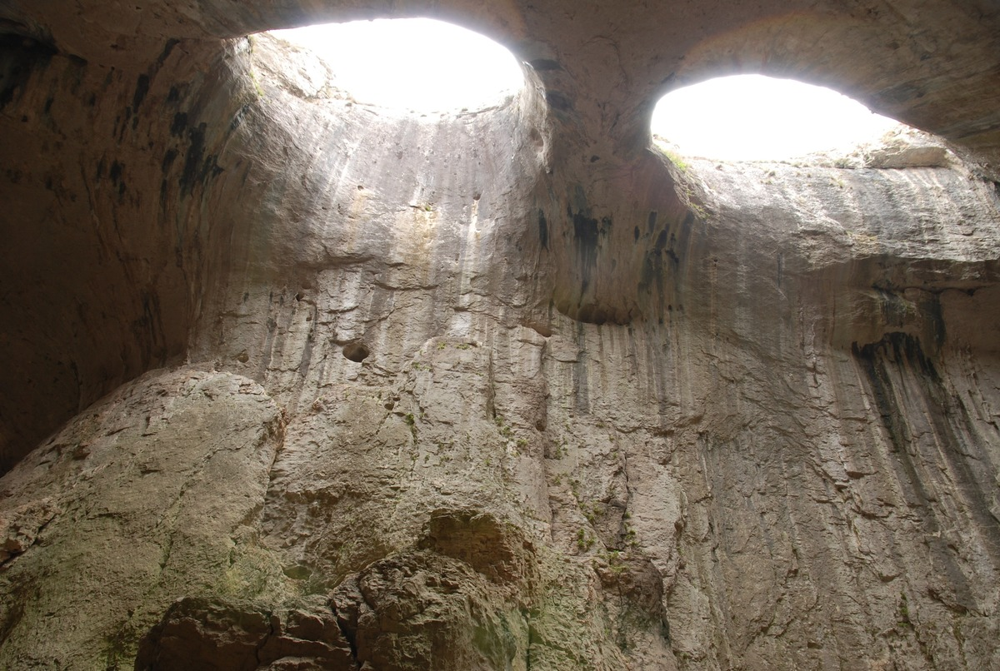
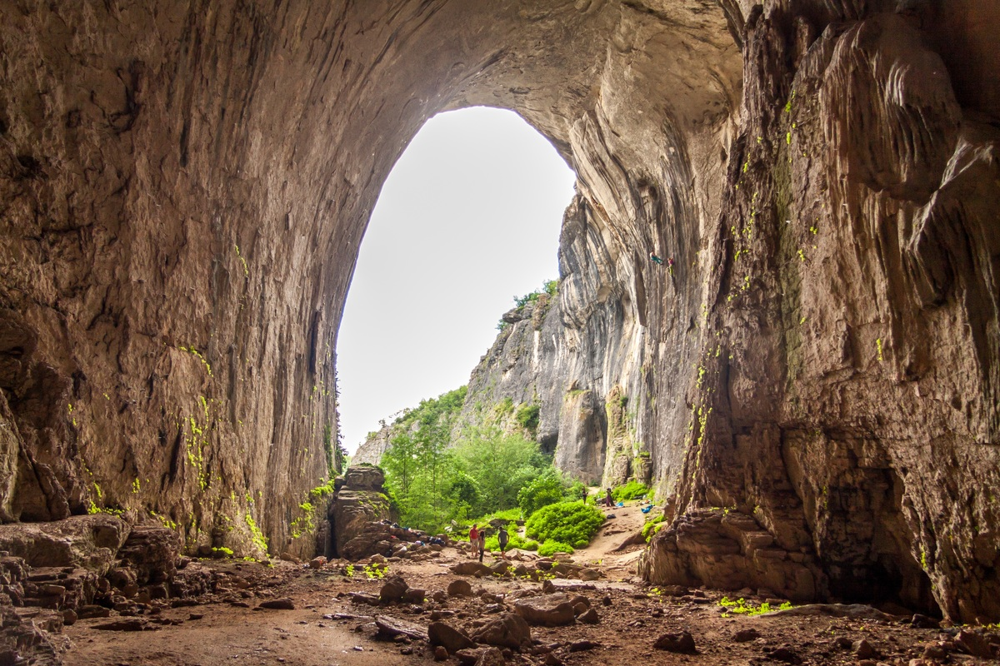

Проходна
Prohodna Cave - Oknata
Useful Information
| Location: |
Near Karlukovo village, some 2km.
From Sofia Hemus Highway towards Varna for 80km, 3 north, turn legt to Karlukovo. By train to Karlukovo. |
| Open: |
No restrictions. [2015] |
| Fee: |
free. [2015] |
| Classification: |
 Karst cave Karst cave
|
| Light: | bring torch |
| Dimension: | L=262m, VR=40m, A=1,520m. |
| Guided tours: | |
| Photography: | Allowed |
| Accessibility: | Not wheelchair accesible |
| Bibliography: | |
| Address: | |
| As far as we know this information was accurate when it was published (see years in brackets), but may have changed since then. Please check rates and details directly with the companies in question if you need more recent info. |
|
History
| 1962 | declared a Natural Landmark. |
Description
|  |
| Image: Oknata (Gods Eyes) in Prohodna Cave. Public Domain. |
{kind=link}
|  |
| Image: Prohodna Cave entrance. Public Domain. |
{kind=link}
Проходна (Prohodna Cave = Through Cave or Passage Cave) is a huge through cave. The original cave system was formed further underground and is now reaching the surface, because the overlaying rocks were mostly removed by weathering. The result is a cave ruin, a 262m long piece of the original cave passage which has not been destroyed while the rest of the passage is gone. The two natural entrances are called the Small Entrance (35m high) and the Big Entrance (45m high). The cave passage is really huge and has a more or less horizontal floor, littered with fallen rocks from the ceiling. There are trails all across the cave, created by the numerous visitors to the cave. This cave is very popular, as it is easy to visit and really spectacular.
The cave is famous for two karstfensters, huge collapses of the ceiling where the sun can shine in. Those two holes close together resemble eyes when seen from the floor of the cave, and are called Oknata or Gods Eyes. The holes actually have the form of two almond shaped eyes. It almost looks like the sky above is staring at the visitors. During day the sun shines in and the blue sky can be seen, during night the holes are full of stars, a really impressive sight.
The cave is located in the Iskar Gorge, or actually a side branch named Karlukovo Gorge, near the village of Karlukovo. Both the gorge and the cave are famous tourist destinations and part of the UNESCO Geopark Iskar-Panega. The Big Entrance is used for bungee jumping.
The cave is also a popular movie location. A scene for the Bulgarian movie Vreme na Nasilie or Time of Violence (1988) was filmed here. Also Ao, the Last Hunter (2010), a French movie about a neandertal man. The propably last was Dragons (2015), a fantasy movie.
- See also
 Search Google for "Prohodna Cave"
Search Google for "Prohodna Cave" Google Earth Placemark
Google Earth Placemark Prohodna - Wikipedia,
(visited: 09-MAY-2015)
Prohodna - Wikipedia,
(visited: 09-MAY-2015) Prohodna; Karlukovo Cave; Cave hole,
(visited: 09-MAY-2015)
Prohodna; Karlukovo Cave; Cave hole,
(visited: 09-MAY-2015)- God's eyes (Prohodna cave, Bulgaria) : pics,
(visited: 09-MAY-2015)
- 7 mysterious caves in Bulgaria - kashkaval tourist,
(visited: 16-AUG-2015)
- The eyes of god- Prohodna cave,
(visited: 16-AUG-2015)
- Tourist Must Visit Prohodna Cave - LOL Travel News,
(visited: 16-AUG-2015)
- Timur Bekmambetov Starts Filming "Dragons" in Bulgaria / Sputnik International,
(visited: 16-AUG-2015)